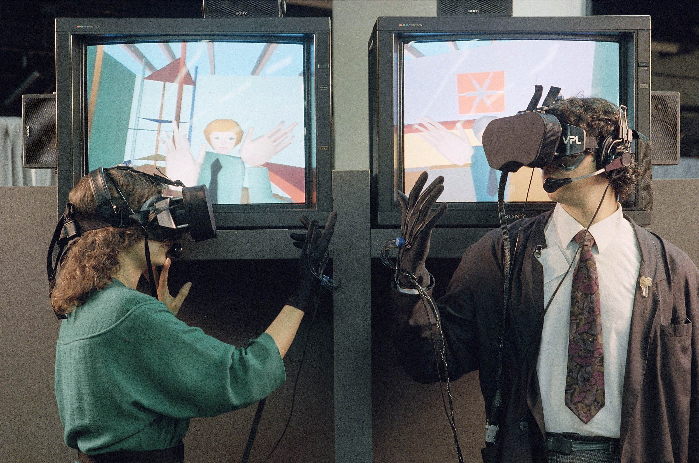

The World of VR
is an Exciting Place
The story behind Vr's current place in the world is long and
engaging with plenty of twists and turns. We've briefly
summerized key points to help you gain a greater
insight into VR culture and how any company could
benefit from becoming more involved in this
rapidly evolving tech of the future
Additional Resources
What is Virtual Reality? VR, the technology of the future VR, how does it work?Virtual reality, or VR, uses computer modeling and simulation to create an artificial 3D visual or environment. You can also use interactive devices that are compatible with virtual reality, such as certain gloves, suits, or headsets, to further immerse yourself in the experience. This immersion is possible because of motion sensors in the devices that track the users movements and adjust the image shown in real time.

|
VR might seem like something that is only possible because of the technology we have access to today. However, technical developments and ideas of virtual reality go as far back as 1838. When Sir Charles Wheatstone became the first person to describe stereopsis, the ability to perceive depth and see in three dimensions, he also did research into binocular vision, which stated that to create 3-D images, the brain combines two photographs (With one eye viewing each) of the same object from different points, which makes the image appear to have depth and immersion. His research led him to create the stereoscope, a device that used a pair of mirrors set 45 degrees to the user's eyes to reflect a picture located off to the side. |
The first depiction of VR was in 1935 when science fiction writer Stanley Weinbaum presented a fictional model for virtual reality in his short story "Pygmalion's Spectacles." In the story, "the main character meets a professor who invented a pair of goggles that enabled "a movie that gives one sight and sound […] taste, smell, and touch. […] You are in the story, you speak to the shadows (characters), and they reply […] the story is all about you, and you are in it.""
|
In 1956, cinematographer Morton Heilig created the first machine to use virtual reality, which he called the "Sensorama ."It had six short films developed for it and was able to fully immerse users in their experiences using technology like combined full-color, 3D videos, audio, vibrations, smell, and atmospheric effects. Heilig also created and patented the "Telesphere Mask," which was the first head-mounted display and provided users with stereoscopic 3D images and stereo sound. However, motion tracking still hadn't been developed yet. The first VR headset with motion tracking was created a year later, in 1961, by Philco. The headset wasn't made for people to use; it was instead made for the military so they could remotely look at hazardous situations using a remote camera to mimic head movements. Virtual reality further assisted the military when Thomas Furness created the first flight simulator for the Air Force in 1966, which assisted in the progression of VR because the military provided a lot of funding for better flight simulators. |
|

|
The idea for transporting people to other places using VR came from a 1977 program called "Aspen Movie Map." The program allowed users to visit and walk around Aspen, Colorado, in sunny or snowy weather, as well as in a polygon setting. The program was created using photographs taken from a car driving through the city, much like how Google does street view on Google Maps. |
The first wired gloves that were compatible with virtual reality were developed in 1982. They were able to monitor hand movements by using light emitters and photocells in the gloves' fingers. When users moved their fingers, the amount of light hitting the photocell varied, which then converted the finger movements into electrical signals.
|
VPL Research Inc. was founded in 1985 and became the first company to sell VR goggles and gloves; they also created their own. A few years later, one of the co-founders began popularizing the term "virtual reality." In 1987, Sun Microsystems bought the VR and graphics-related patents. Around this time, Dimension International developed a program that could build 3D worlds on a PC. |
 |

|
Virtual Reality finally made its way into gaming in 1991 when a group called "Virtuality" launched a project under the same name. Virtuality (the project) was a line of VR arcade machines that featured VR headsets and real-time stereoscopic 3D images. These machines allowed users to play some of the most popular arcade games, like Pac-Man, and even some multiplayer games. |
A few game companies tried to capitalize on the growing interest in virtual reality. Like SEGA releasing a VR headset for the Mega Drive console in 1991, or Nintendo and its release of the Virtual Boy in 1995. Both of these were discontinued due to things like concerns for the safety of players and poor design.
|
Interest in VR skyrocketed after Palmer Luckey created the first prototype for the Oculus Rift headset in 2010. It was revolutionary for featuring a 90-degree field of vision and used computer processing to deliver the images. Luckey launched a kickstarter campaign for the final product two years later in 2012, which raised 2.4 million dollars. |
|
Facebook bought Oculus VR in 2014 for 2 billion dollars. Soon after, large companies like Google and Samsung began trying to develop VR devices that were compatible with their products. Soon after, virtual reality started becoming more accessible to the general public. By 2016 hundreds of companies were developing VR products, most of which featured binaural audio. Most handsets were still button-operated due to the underdevelopment of haptic interfaces.
From 2017 to 2024, virtual reality continued to improve. It became more accessible to the public and was now being used in a variety of ways, from enhanced gaming experiences to medical assistance. Newer and newer models of devices were being made that were compatible with virtual reality, such as Facebook's Oculus Quest and Quest 2. Virtual reality has been rapidly developing over the last decade, and there’s no reason for it to stop any time soon.